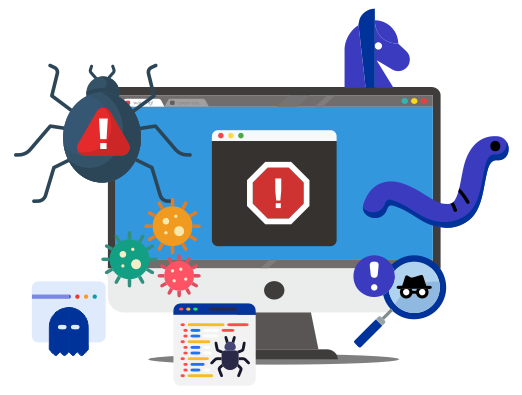

Cyberbullying is bullying with the use of digital technologies. It can take place on social media, messaging platforms, gaming platforms and mobile phones. It is repeated behaviour, aimed at scaring, angering or shaming those who are targeted.
Data Breaches
A data breach is unauthorized access and retrieval of sensitive information by an individual, group, or software system. It can happen intentionally or unintentionally when data falls into the wrong hands without the knowledge of the user or owner. They are partly causes thanks to the information becoming easier to access due to the increase of digital products
Scams
A scam refers to someone using internet services or software to defraud or take advantage of victims. It is usually done in order to obtain financial or other important personal information. Victims can be contacted through personal or work email accounts, social networking sites, dating apps, or other methods
Viruses

A computer virus is a type of malicious software, that spreads between computers and causes damage to data and software. Computer viruses aim to disrupt systems, cause major operational issues, and result in data loss and leakage. They can be spread via email, and some are capable of spreading themselves, or can be attached to legitimate software, within software packs, or infected code. Other viruses can be downloaded from compromised application stores and infected code repositories.